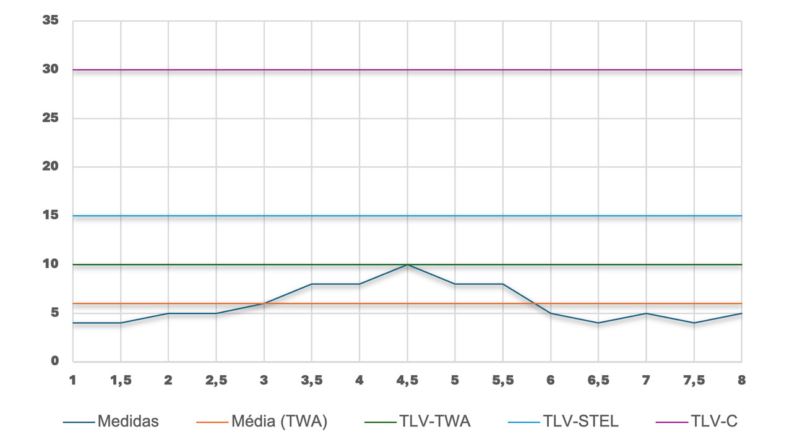

MÓDULO 2 | AULA 5 Toxicologia Ocupacional
Monitoramento ambiental (MA)
É a determinação dos agentes químicos presentes na atmosfera do ambiente de trabalho (ar), para avaliar o risco à saúde, comparando-se os resultados obtidos com referências apropriadas.
- Define valores máximos admissíveis ou aceitáveis, os chamados limites de exposição ocupacional (LEO) ou limites de tolerância (LT);
- Trabalhadores são considerados “adultos saudáveis”;
- Também é feito no Meio Ambiente para verificar níveis de poluição nos compartimentos ambientais (águas, ar e solos).
O MA permite identificar fontes emissoras de AT e compreender onde há maior concentração destas, mapeando o local de trabalho e as áreas de maior risco, permitindo assim inferir quais grupos de trabalhadores estão sob maior risco. Isso pode direcionar mais efetivamente ações de melhoria do ambiente de trabalho, ou por onde começar investigações mais detalhadas.
Limites de Exposição Ocupacional (LEO)
Também chamados de Limites de Tolerância (LT), são concentrações de substâncias químicas dispersas no ar, e representam condições sob as quais se supõe que quase todos os trabalhadores podem estar expostos, dia após dia, sem efeitos adversos à saúde. Estes limites são estabelecidos a partir informações confiáveis: estudos experimentais com animais, estudos epidemiológicos com trabalhadores, estudos clínicos ou outras investigações científicas, que, de forma confiável, estimem o risco à saúde a partir da concentração de AT nos ambientes de trabalho.
É importante destacar que um valor de limites de tolerância (LT) não representa um limite entre uma atmosfera insalubre e saudável. Considerando variações de concentrações ao longo do dia, ou da distribuição destas substâncias no ambiente laboral, e principalmente, susceptibilidades individuais, que tornam algumas pessoas mais sensíveis, mesmo que uma avaliação resulte em concentrações de AT abaixo dos LT’s estabelecidos na legislação, há sim a possibilidade de adoecimento de trabalhadores.
Para lidar com esta realidade, existe o Nível de Ação (NA), que é o nível a partir do qual o trabalhador é considerado exposto ao agente químico → NA = 50% do LEO. Nesses casos, o NA representa a concentração a partir da qual ações de MA, MB e Vigilância da Saúde devem ser iniciadas.
- Threshold Limit Value (TLV) - ACGIH / EUA
- Permissible Exposure Limit (PEL) - OSHA / EUA
- Recommended Exposure Limits (REL) - NIOSH / EUA
- Occupational Exposure Limit (OEL) - ECHA / União Europeia
- Workplace Exposure Limit (WEL) - HSE / Inglaterra
Norma Regulamentadora Nº 15 (NR-15) & American Conference of Governmental Industrial Hygienists (ACGIH)

No Brasil, a Norma Regulamentadora nº 15 (NR-15: Atividades e Operações Insalubres) define as substâncias cuja insalubridade é caracterizada pela existência de um limite de tolerância (LT). Seu Anexo 11 apresenta a tabela de valores de LT para agentes químicos, porém só temos limites para 150 substâncias. Valores que ultrapassam os limites estabelecidos caracterizam a insalubridade, e dão ao trabalhador o direito de receber esse adicional em seu salário. Cabe destacar que, todos os valores são válidos para absorção apenas por via respiratória.
De acordo com a NR-15, LT's são a concentração ou intensidade máxima ou mínima, relacionada com a natureza e o tempo de exposição ao agente, que não causará danos à saúde do trabalhador, durante a sua vida laboral. Essa definição deixa de fora pessoas mais sensíveis.
De forma complementar, quando o AT não está listado em nossa NR, recomenda-se a adoção ou consulta aos Threshold Limit Values (TLV's) da American Conference of Governmental Industrial Hygienists (ACGIH), uma organização não governamental americana, dedicada a promover a saúde e segurança ocupacional e ambiental. Ela define 3 tipos de limites, para o MA:
| Quadro 1: Tipo de TLV's | ||
|---|---|---|
| TLV-TWA (Time Weighted Average) |
TLV-STEL (Short Term Exposure Limit) |
TLV-C (Ceiling) |
| Média ponderada pelo tempo | Limite de exposição de curto prazo | Teto |
| Para substâncias com efeitos de médio e longo prazo. | Exposições de curto prazo sem ocorrência de irritação, lesão tecidual ou narcose. | Substâncias de elevada toxicidade ou risco, que produzem efeito em curto prazo. |
| A exposição pode ultrapassar a TLV por curto intervalo de tempo. | Pode ser atingido por 15 minutos, 4x/dia, com intervalos de 60 minutos. | Concentração não pode ser ultrapassada em momento algum da jornada. |
A ACGIH é uma organização científica americana que estabelece os TLV's (Threshold Limit Values), ou seja, valores de referência para limites de exposição ocupacional a agentes químicos, físicos e biológicos, com base em evidências científicas.
